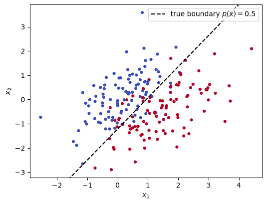
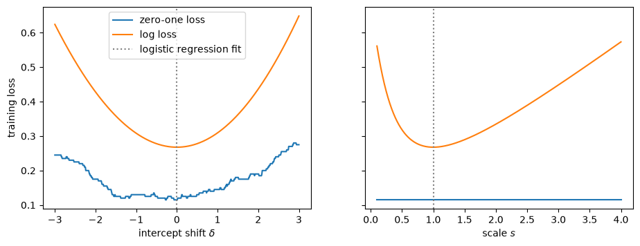
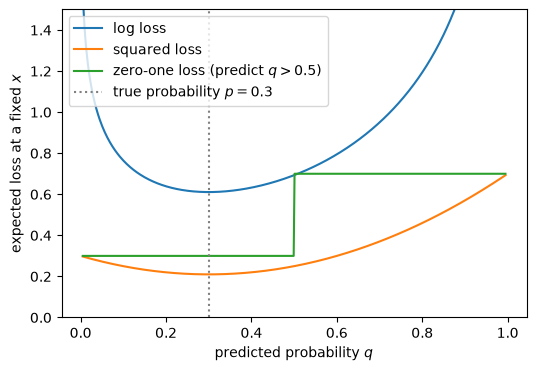

Today’s goals (see the exercise for the full list):
Classification as empirical risk minimization, and the Bayes classifier for a (weighted) zero-one loss.
Why we do not minimize the zero-one loss directly, and use a proxy loss instead.
Proxy losses such as the log loss recover \(p(\boldsymbol{x}) = \mathbb{P}_{\,}\left(y = 1 \mid \boldsymbol{x}\right) = \mathbb{E}_{\vphantom{}}\left[y \mid \boldsymbol{x}\right]\). Logistic regression is ERM with the log loss.
LDA: a generative route to the same kind of estimate.
Turning probabilities into decisions: thresholds, false positives and negatives, and ROC curves.
A common failure mode: with a rare class, a classifier can look accurate while mostly ignoring that class. ROC curves help you detect it.
The common thread: every method today estimates \(p(\boldsymbol{x})\), then thresholds it. Trees, and the \(F_1\) score as one way of dealing with rare classes, are the topics of the next lab.
LLM assistance was used during the elaboration of this presentation and the exercise.
1 Classification as empirical risk minimization
We observe features \(\boldsymbol{x}\in \mathbb{R}^P\) and a label \(y \in \{0, 1\}\), and want a classifier \(\hat y(\boldsymbol{x}) \in \{0, 1\}\). The loss we usually care about counts mistakes, possibly weighting the two kinds differently: \[
\mathscr{L}(\hat y, y) = c_{\text{FN}} \mathrm{I}\left(\hat y = 0, y = 1\right) + c_{\text{FP}} \mathrm{I}\left(\hat y = 1, y = 0\right),
\] where \(c_{\text{FN}}\) is the cost of a false negative and \(c_{\text{FP}}\) the cost of a false positive. With \(c_{\text{FN}} = c_{\text{FP}} = 1\) this is the zero-one loss, the misclassification rate.
The Bayes classifier. The classifier with the smallest risk \(\mathbb{E}_{\vphantom{}}\left[\mathscr{L}(\hat y(\boldsymbol{x}), y)\right]\) predicts \(1\) exactly when \[
p(\boldsymbol{x}) > \frac{c_{\text{FP}}}{c_{\text{FP}} + c_{\text{FN}}}, \qquad p(\boldsymbol{x}) = \mathbb{P}_{\,}\left(y = 1 \mid \boldsymbol{x}\right).
\] You proved this in Homework 2, Problem 1, where \(c_{10}\) is the cost of a false positive and \(c_{01}\) the cost of a false negative. With equal costs the threshold is \(0.5\) (Unit 2 lecture).
So whatever the costs, the optimal decision only depends on \(p(\boldsymbol{x})\). Since \(y \in \{0, 1\}\), \[
p(\boldsymbol{x}) = \mathbb{P}_{\,}\left(y = 1 \mid \boldsymbol{x}\right) = \mathbb{E}_{\vphantom{}}\left[y \mid \boldsymbol{x}\right],
\] the regression function of \(y\) on \(\boldsymbol{x}\). Estimating \(p(\boldsymbol{x})\) is a regression problem, and once we have an estimate \(q(\boldsymbol{x})\), we can plug it into the Bayes rule for whatever costs we face.
1.1 A practice world
As in Lab 4, we use simulated data in which we know \(p(\boldsymbol{x})\), so that we can draw the true decision boundary \(\{\boldsymbol{x}: p(\boldsymbol{x}) = 0.5\}\) and compare any method with the best possible one. Here each class is a Gaussian with the same covariance, and both classes are equally likely. How do we know the true boundary? We chose how the data are generated: class 0 is \(N(\boldsymbol{\mu}_0, \boldsymbol{\Sigma})\) and class 1 is \(N(\boldsymbol{\mu}_1, \boldsymbol{\Sigma})\), each with probability \(1/2\), with \(\boldsymbol{\mu}_0\), \(\boldsymbol{\mu}_1\) and \(\boldsymbol{\Sigma}\) written in simulator.py. Knowing these distributions, Bayes’ rule gives \(p(\boldsymbol{x})\) exactly at every \(\boldsymbol{x}\) (we will see how in the LDA section below), and the true boundary is the curve where it equals \(0.5\), which here is a straight line. With real data we never know these distributions, so we can only estimate \(p(\boldsymbol{x})\). The line world = PracticeWorld("shared") below creates this world as a Python object, which can draw training data from it (world.simulate), tell us the true \(p(\boldsymbol{x})\) (world.true_prob), and draw the true decision boundary (world.plot_true_boundary).
import sysimport numpy as npimport matplotlib.pyplot as pltfrom scipy.special import expitfrom sklearn.discriminant_analysis import LinearDiscriminantAnalysisfrom sklearn.inspection import DecisionBoundaryDisplayfrom sklearn.linear_model import LogisticRegressionfrom sklearn.metrics import roc_curve, roc_auc_scoresys.path.insert(0, "../../datasets/classification_lab") # in your notebook: download simulator.py as in the exercisefrom simulator import PracticeWorlddef add_boundary(model, X, ax, color, label, level=0.5):"""Draw the curve where the model's predicted probability equals `level`.""" DecisionBoundaryDisplay.from_estimator(model, X, response_method="predict_proba", plot_method="contour", levels=[level], ax=ax, colors=color) ax.plot([], [], color=color, label=label) # empty line, so the boundary shows up in the legendworld = PracticeWorld("shared")X, y = world.simulate(200, seed=1)fig, ax = plt.subplots(figsize=(6, 4.5))ax.scatter(X[:, 0], X[:, 1], c=y, cmap="coolwarm", s=12)world.plot_true_boundary(ax)ax.plot([], [], "k--", label="true boundary $p(x) = 0.5$")ax.set_xlabel("$x_1$"); ax.set_ylabel("$x_2$"); ax.legend()plt.show()

2 Why not minimize the zero-one loss directly?
ERM with the zero-one loss would choose, among linear classifiers \(\hat y(\boldsymbol{x}) = \mathrm{I}\left(\beta_0 + \boldsymbol{x}^\intercal\boldsymbol{\beta}> 0\right)\), the one with the fewest training mistakes. Two problems:
It cannot be optimized with gradients. The training error only changes when the boundary crosses a training point, so as a function of \((\beta_0, \boldsymbol{\beta})\) it is a step function: flat almost everywhere, with jumps in between. Its gradient is zero wherever it exists, and finding the minimum is a combinatorial search.
It only sees the predicted label, not the probability. Two models with the same boundary but very different confidence have exactly the same zero-one loss. So the zero-one loss cannot tell us \(p(\boldsymbol{x})\), and a classifier fit to minimize it cannot be re-thresholded when the costs change.
Below we start from the logistic regression fit \(q(\boldsymbol{x}) = \mathrm{Expit}\left(\hat\beta_0 + \boldsymbol{x}^\intercal\hat{\boldsymbol{\beta}}\right)\) and perturb it in two ways, recording the training zero-one loss and the training log loss:
Left: shift the intercept, \(\hat\beta_0 + \delta\), which slides the boundary.
Right: scale all coefficients, \(s \cdot (\hat\beta_0, \hat{\boldsymbol{\beta}})\), which keeps the boundary fixed but makes the probabilities more (\(s > 1\)) or less (\(s < 1\)) confident.
logistic = LogisticRegression(C=np.inf).fit(X, y) # C=np.inf: no regularizationb0, b = logistic.intercept_[0], logistic.coef_[0]def train_losses(q):"""Training zero-one loss (predicting q > 0.5) and log loss of probabilities q.""" q = np.clip(q, 1e-12, 1-1e-12)return np.mean((q >0.5) != y), -np.mean(y * np.log(q) + (1- y) * np.log(1- q))shifts = np.linspace(-3, 3, 601)scales = np.linspace(0.1, 4, 400)by_shift = np.array([train_losses(expit(b0 + d + X @ b)) for d in shifts])by_scale = np.array([train_losses(expit(s * (b0 + X @ b))) for s in scales])fig, axes = plt.subplots(1, 2, figsize=(11, 3.8), sharey=True)for ax, grid, res, xlabel, fitted in [(axes[0], shifts, by_shift, r"intercept shift $\delta$", 0), (axes[1], scales, by_scale, r"scale $s$", 1)]: ax.plot(grid, res[:, 0], label="zero-one loss") ax.plot(grid, res[:, 1], label="log loss") ax.axvline(fitted, color="gray", ls=":", label="logistic regression fit") ax.set_xlabel(xlabel)axes[0].set_ylabel("training loss"); axes[0].legend()plt.show()

On the left, the zero-one loss is a jagged step function, while the log loss is smooth with a single minimum. On the right, the zero-one loss does not change at all, because the boundary never moves, while the log loss clearly prefers one level of confidence.
3 Proxy losses
Instead, we fit a probability \(q(\boldsymbol{x})\) with a smooth proxy loss, then threshold it. The two standard choices are \[
\mathscr{L}_{\text{log}}(q, y) = -y \log q- (1 - y) \log(1 - q), \qquad \mathscr{L}_{\text{sq}}(q, y) = (q- y)^2.
\] What makes them good proxies is what they are minize. Fix \(\boldsymbol{x}\), write \(p = p(\boldsymbol{x})\), and average over the random label \(y \sim \text{Bernoulli}(p)\): \[
\mathbb{E}_{\vphantom{}}\left[\mathscr{L}_{\text{log}}(q, y) \mid \boldsymbol{x}\right] = -p \log q- (1 - p) \log(1 - q), \qquad \mathbb{E}_{\vphantom{}}\left[\mathscr{L}_{\text{sq}}(q, y) \mid \boldsymbol{x}\right] = (q- p)^2 + p(1 - p).
\] Both are minimized at \(q= p\): the risk minimizer of either proxy loss is the true probability \(p(\boldsymbol{x}) = \mathbb{E}_{\vphantom{}}\left[y \mid \boldsymbol{x}\right]\). For the squared loss this is exactly the regression result from Unit 1. Losses with this property are called proper scoring rules (Unit 2 lecture, and the “Proper scoring rules” problem in Homework 2).
Compare this with the zero-one loss. If we predict \(\hat y = \mathrm{I}\left(q> 0.5\right)\), the expected zero-one loss at \(\boldsymbol{x}\) is \(1 - p\) when \(q> 0.5\) and \(p\) when \(q\le 0.5\): it only depends on which side of \(0.5\) the prediction \(q\) falls, not on \(q\) itself. With \(p = 0.3\), the predictions \(q= 0.01\), \(q= 0.3\) and \(q= 0.49\) all have the same expected zero-one loss, so minimizing the zero-one loss gives us no reason to prefer the correct value \(q= 0.3\). That is a problem as soon as the costs change: with \(c_{\text{FN}} = 9 \, c_{\text{FP}}\), the Bayes rule needs to know whether \(p(\boldsymbol{x}) > 0.1\), and a model trained on the zero-one loss cannot tell us that, while one trained on a proxy loss can. The plot below shows the three expected losses for \(p = 0.3\).
p =0.3q = np.linspace(0.005, 0.995, 500)fig, ax = plt.subplots(figsize=(6, 4))ax.plot(q, -p * np.log(q) - (1- p) * np.log(1- q), label="log loss")ax.plot(q, (q - p) **2+ p * (1- p), label="squared loss")ax.plot(q, np.where(q >0.5, 1- p, p), label="zero-one loss (predict $q > 0.5$)")ax.axvline(p, color="gray", ls=":", label=f"true probability $p = {p}$")ax.set_ylim(0, 1.5); ax.set_xlabel("predicted probability $q$"); ax.set_ylabel("expected loss at a fixed $x$")ax.legend(); plt.show()

3.1 Logistic regression is ERM with the log loss
Logistic regression models \(q(\boldsymbol{x}) = \mathrm{Expit}\left(\beta_0 + \boldsymbol{x}^\intercal\boldsymbol{\beta}\right)\) and chooses \(\beta_0, \boldsymbol{\beta}\) to minimize the average training log loss. Writing \(f = \beta_0 + \boldsymbol{x}^\intercal\boldsymbol{\beta}\), the loss becomes \(-y f + \log(1 + e^{f})\), which is smooth and convex in \((\beta_0, \boldsymbol{\beta})\), so it can be minimized reliably. This gives the plug-in recipe we use for the rest of the lab:
estimate \(p(\boldsymbol{x})\) by minimizing a proxy loss,
predict \(\hat y = 1\) when \(q(\boldsymbol{x})\) exceeds the threshold that the costs call for.
In scikit-learn, LogisticRegression adds a ridge penalty by default, with strength \(1/C\). We use C=np.inf to turn it off.
4 LDA: a generative route to \(p(\boldsymbol{x})\)
Logistic regression models \(\mathbb{P}_{\,}\left(y \mid \boldsymbol{x}\right)\) directly (discriminative). Linear discriminant analysis (LDA) is generative: it models how \(\boldsymbol{x}\) is distributed within each class, \(f_k(\boldsymbol{x})\) (the density of \(\boldsymbol{x}\) given \(y = k\)), and how common each class is, \(\pi_k = \mathbb{P}_{\,}\left(y = k\right)\), then flips the conditioning with Bayes’ rule.
The trick: flipping the conditioning. The joint density of \(\boldsymbol{x}\) and \(y = k\) can be factored in two ways, conditioning on either variable: \[
\mathbb{P}_{\,}\left(y = k \mid \boldsymbol{x}\right) \, f(\boldsymbol{x}) = f_k(\boldsymbol{x}) \, \pi_k,
\] where \(f(\boldsymbol{x})\) is the marginal density of \(\boldsymbol{x}\), ignoring the label. By the law of total probability, the marginal is a mixture of the two class densities, weighted by how common each class is: \(f(\boldsymbol{x}) = \pi_0 f_0(\boldsymbol{x}) + \pi_1 f_1(\boldsymbol{x})\). Dividing by \(f(\boldsymbol{x})\) and taking \(k = 1\), \[
p(\boldsymbol{x}) = \mathbb{P}_{\,}\left(y = 1 \mid \boldsymbol{x}\right) = \frac{\pi_1 f_1(\boldsymbol{x})}{f(\boldsymbol{x})} = \frac{\pi_1 f_1(\boldsymbol{x})}{\pi_0 f_0(\boldsymbol{x}) + \pi_1 f_1(\boldsymbol{x})}.
\]
LDA assumes that each class is Gaussian with a common covariance, \(\boldsymbol{x}\mid y = k \sim N(\boldsymbol{\mu}_k, \boldsymbol{\Sigma})\), and estimates \(\pi_k\), \(\boldsymbol{\mu}_k\) and \(\boldsymbol{\Sigma}\) by the class proportions, the class means and the pooled within-class covariance (ESL Section 4.3). Plugging Gaussians into Bayes’ rule, the quadratic terms \(-\frac12 \boldsymbol{x}^\intercal\boldsymbol{\Sigma}^{-1}\boldsymbol{x}\) cancel because both classes share \(\boldsymbol{\Sigma}\), and the log odds are linear in \(\boldsymbol{x}\) (ESL eq. 4.9): \[
\log \frac{p(\boldsymbol{x})}{1 - p(\boldsymbol{x})} = \underbrace{\log\frac{\pi_1}{\pi_0} - \frac{1}{2}(\boldsymbol{\mu}_1 + \boldsymbol{\mu}_0)^\intercal\boldsymbol{\Sigma}^{-1} (\boldsymbol{\mu}_1 - \boldsymbol{\mu}_0)}_{\beta_0} + \boldsymbol{x}^\intercal\underbrace{\boldsymbol{\Sigma}^{-1}(\boldsymbol{\mu}_1 - \boldsymbol{\mu}_0)}_{\boldsymbol{\beta}}.
\] So LDA ends up with exactly the logistic regression form, \(p(\boldsymbol{x}) = \mathrm{Expit}\left(\beta_0 + \boldsymbol{x}^\intercal\boldsymbol{\beta}\right)\); you worked through this connection in the “Logistic regression as Gaussian generative modeling” problem of Homework 2.
Same form, different estimates (ESL Section 4.4.5). Logistic regression maximizes the likelihood of the labels given the features, and makes no assumption about how \(\boldsymbol{x}\) is distributed. LDA fits the full joint distribution of \((\boldsymbol{x}, y)\), so every observation, including ones far from the boundary, affects its estimate. When the Gaussian assumption holds, this makes LDA more efficient; when it fails, it can pull the LDA boundary away. ESL: “It is generally felt that logistic regression is a safer, more robust bet than the LDA model, relying on fewer assumptions.”
Here LDA’s assumptions hold exactly, and the two fits nearly coincide:
In the exercise you will find a world where the difference matters.
5 From probabilities to decisions: thresholds and ROC curves
For any threshold \(t\), the classifier \(\hat y = \mathrm{I}\left(q(\boldsymbol{x}) > t\right)\) makes two kinds of mistakes. Counting on some set of observations (usually a test set) with \(P\) positives (\(y = 1\)) and \(N\) negatives (\(y = 0\)):
The two rates we track (Unit 2 lecture on false positives and negatives) are each computed within one class: \[
\text{TPR} = \frac{\text{TP}}{P} \;\;(\text{fraction of positives we catch}), \qquad \text{FPR} = \frac{\text{FP}}{N} \;\;(\text{fraction of negatives we wrongly flag}).
\] In the medical language that ESL uses (Section 9.2.5), the TPR is the sensitivity and \(1 - \text{FPR}\) is the specificity. Note that, since the columns add up to fixed counts, these two numbers suffice to describe the full performance of the model. This contains strictly more information than the accuracy which is a sum of the diagonal and in being a single number misses some information from the matrix.
Rejection regions. The set where we predict 1, \(R_t = \{\boldsymbol{x}: q(\boldsymbol{x}) > t\}\), plays the role of a rejection region in a hypothesis test of “\(y = 0\)” against “\(y = 1\)”: the FPR is the probability of rejecting when \(y = 0\) (the size, or type I error rate), and the TPR is the probability of rejecting when \(y = 1\) (the power). For logistic regression, \(R_t\) has a simple shape. Since \(q(\boldsymbol{x}) = \mathrm{Expit}\left(\beta_0 + \boldsymbol{x}^\intercal\boldsymbol{\beta}\right)\) and the expit function is increasing, we can apply its inverse, \(\mathrm{Logit}\left(t\right) = \log\frac{t}{1 - t}\), to both sides of \(q(\boldsymbol{x}) > t\): \[
q(\boldsymbol{x}) > t \iff \beta_0 + \boldsymbol{x}^\intercal\boldsymbol{\beta}> \mathrm{Logit}\left(t\right) \iff \boldsymbol{x}^\intercal\boldsymbol{\beta}> \mathrm{Logit}\left(t\right) - \beta_0.
\] So \(R_t\) is a half-plane, and its boundary is the line \(\{\boldsymbol{x}: \boldsymbol{x}^\intercal\boldsymbol{\beta}= \mathrm{Logit}\left(t\right) - \beta_0\}\). Changing \(t\) only changes the constant \(\mathrm{Logit}\left(t\right) - \beta_0\) on the right-hand side, not \(\boldsymbol{\beta}\), and \(\boldsymbol{\beta}\) is what sets the direction of the line (it is perpendicular to it). So all these boundaries are parallel lines, just like \(\{x_2 = c\}\) for different values of \(c\): lowering \(t\) slides the line towards class 0 and makes \(R_t\) bigger, and \(t = 0.5\) gives \(\mathrm{Logit}\left(0.5\right) = 0\), the usual decision boundary.
The ROC curve plots \((\text{FPR}(t), \text{TPR}(t))\) for every threshold \(t\) at once. Lowering \(t\) moves up and to the right: we catch more positives, but incorrectly flag as positive more negatives. By the Bayes rule, each threshold corresponds to a choice of costs, \(t = c_{\text{FP}} / (c_{\text{FP}} + c_{\text{FN}})\), so the ROC curve is the menu of classifiers we would pick for every possible ratio of costs. This is exactly how ESL draws the ROC curve of its spam classifier (Section 9.2.5, Figure 9.6): it varies the relative loss of the two kinds of errors, applies the Bayes rule, and records the sensitivity and specificity. The Unit 2 lecture makes the link precise: the point that minimizes the expected cost \(c_{\text{FP}} \cdot \text{FP} + c_{\text{FN}} \cdot \text{FN}\) is where the slope of the ROC curve equals \(\frac{N}{P} \cdot \frac{c_{\text{FP}}}{c_{\text{FN}}}\).
A useless classifier, whose prediction ignores \(\boldsymbol{x}\), lies on the diagonal, and a curve below the diagonal can be flipped into one above it (Homework 2, “ROC curves of bad classifiers”). A perfect classifier goes through the top-left corner. The area under the curve (AUC) summarizes how well \(q\)ranks the two classes, regardless of the threshold: it equals the probability that a randomly chosen positive gets a higher \(q\) than a randomly chosen negative (the Mann-Whitney statistic, ESL Section 9.2.5).
Choosing the threshold in practice. The threshold is a hyperparameter of the classifier. When the costs are known and \(q\) is a good estimate of \(p\), the Bayes rule tells us which threshold to use; otherwise, we choose it like any other hyperparameter, with cross validation on the training data (Labs 4 and 5), and use the test set only to evaluate the final choice. You will do this in the exercise.
Now keep the two class distributions exactly as before, but make class 1 rare: \(\mathbb{P}_{\,}\left(y = 1\right) = 0.05\). We fit logistic regression on 2,000 observations and look at a large test set.
P(y=1) accuracy at 0.5 accuracy of 'always 0' TPR at 0.5 AUC
0.5 0.880 0.502 0.88 0.951
0.05 0.966 0.950 0.48 0.951
Three things to notice:
Accuracy hides the problem. With a rare class, accuracy is dominated by the majority class: “always predict 0” is already 95% accurate, and our model barely beats it.
The ROC curve does not change. TPR and FPR are each computed within one class, so they do not depend on how common the classes are. In the LDA formula (ESL eq. 4.9), making class 1 rarer only lowers \(\log(\pi_1 / \pi_0)\) in the intercept \(\beta_0\): as in the previous section, the boundary slides without rotating, so the model ranks observations exactly as before.
The operating point does. At threshold 0.5 the model now flags very few observations, and the dot slides towards the bottom-left corner: it misses about half of the rare class. In the extreme, a classifier that predicts 0 for everyone sits at \((0, 0)\), with excellent accuracy and no use at all.
Why does the 0.5 threshold land there? It is doing what the zero-one loss asks. With equal costs, the slope result from the lecture says that the point on the ROC curve with the fewest mistakes is where the slope equals \(N / P\), the ratio of negatives to positives. With \(\mathbb{P}_{\,}\left(y = 1\right) = 0.05\) that slope is 19, which the curve only reaches on its steep part, near the bottom-left. So flagging very little of the rare class is the right answer for accuracy, and the model is not broken. The problem is that accuracy is rarely what we care about when one class is rare: missing a rare disease case or a fraudulent transaction usually costs much more than a false alarm.
Test-set estimates are noisy for the rare class. As in Lab 4, TPR and FPR are estimates from a finite test set. The TPR is estimated from the \(P\) positives only, with binomial standard error \(\sqrt{\text{TPR}(1 - \text{TPR}) / P}\) (ESL Section 9.2.5 does a similar calculation for its spam ROC curve). With \(\mathbb{P}_{\,}\left(y = 1\right) = 0.05\), our 20,000 test observations contain only about 1,000 positives, and with \(\mathbb{P}_{\,}\left(y = 1\right) = 0.02\) only about 400.
So: when one class is rare, do not judge a classifier by its accuracy. Look at where it sits on the ROC curve (equivalently, its TPR and FPR) and ask whether that matches what you need. If you know the costs, the Bayes rule above tells you which threshold to use. If you do not, you need a metric that cares about the rare class, such as the \(F_1\) score, which is the topic of the next lab.
7 Summary
The optimal decision only depends on \(p(\boldsymbol{x}) = \mathbb{E}_{\vphantom{}}\left[y \mid \boldsymbol{x}\right]\), thresholded at \(c_{\text{FP}} / (c_{\text{FP}} + c_{\text{FN}})\).
We cannot minimize the zero-one loss directly: it is a step function of the parameters and ignores probabilities. Proper proxy losses (log loss, squared loss) are smooth and are minimized by \(p(\boldsymbol{x})\).
Logistic regression is ERM with the log loss over \(\mathrm{Expit}\left(\beta_0 + \boldsymbol{x}^\intercal\boldsymbol{\beta}\right)\). LDA reaches the same linear form generatively, by modeling each class as a Gaussian and applying Bayes’ rule.
A threshold turns \(q(\boldsymbol{x})\) into a classifier; the ROC curve shows the TPR/FPR tradeoff over all thresholds.
With a rare class, accuracy can look great while the classifier ignores that class. Check the operating point on the ROC curve.